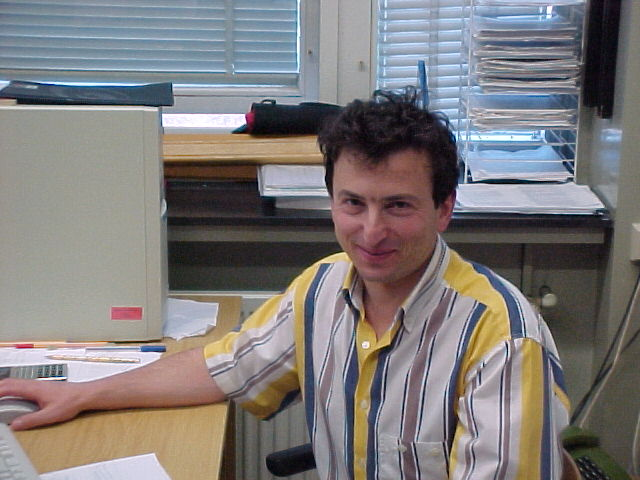
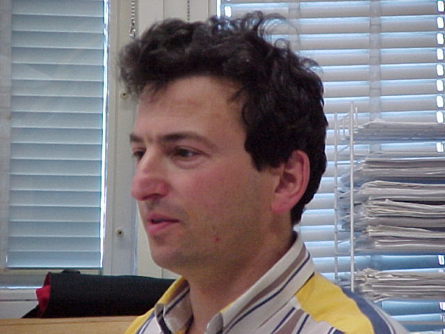

Some pictures taken by a digital camera belonging to our
lab.
1. September
1999, London, at UCL
2. These
were taken in Clausthal, Germany in July 1999 during my visit to Volker
Kempter.
Actually, you
can see me sitting at MY desk there. I have therefore two computers and
two desks!

